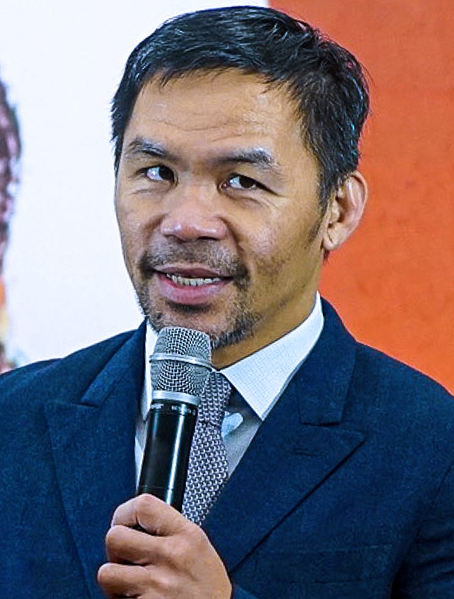
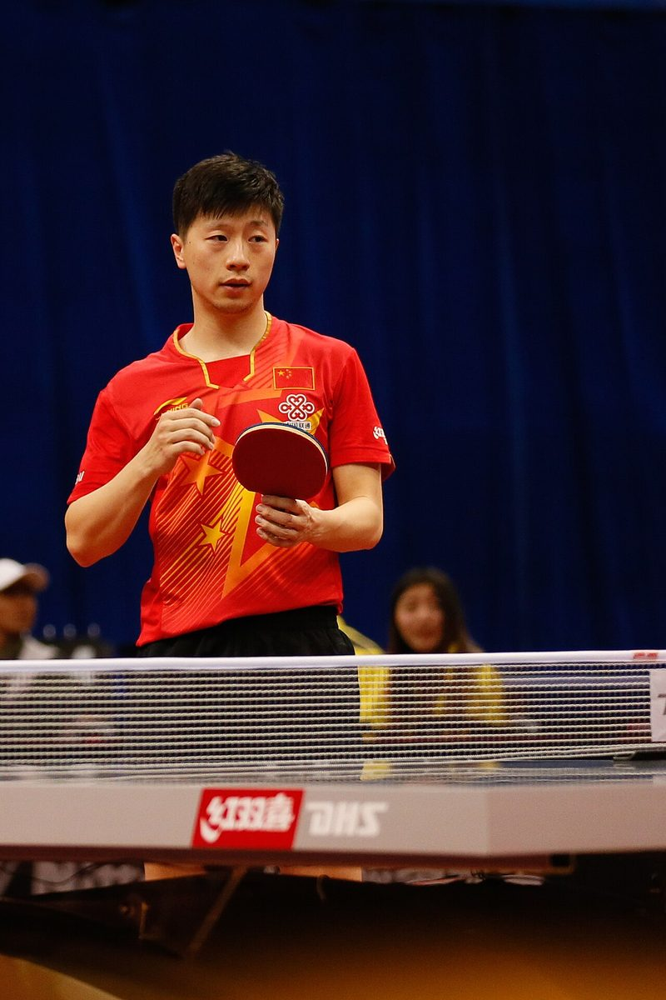

Athlete story

Alexander Ovechkin: The Moscow Prodigy Who Broke Wayne Gretzky's NHL Record
From a childhood loss in Moscow to the NHL goals record and a farewell season: the story of the Washington Capitals captain.

From a Paper Napkin to 47 Trophies: The Life and Legacy of Lionel Messi
Overcoming growth hormone deficiency in Rosario, the Argentine maestro built football's most decorated career across Barcelona, Paris, and Miami.

Chan Vathanaka: The Kampot Prodigy Who Put Cambodian Football on the Regional Map
From Kampot to Japan and the Cambodian Premier League scoring record, then two ACL tears: the story of Cambodia's most prolific forward and the comeback he is still writing.

Joseph Schooling's Journey: From Childhood Dream to Singapore's First Olympic Gold
How family sacrifice, American training and an Olympic record over Michael Phelps shaped the life of Singapore's greatest swimmer.

From Heartbreak in London to History in Rio: The Life of Hoang Xuan Vinh
Overcoming childhood loss, severe nearsightedness and agonizing near-misses, the army officer delivered his country's first Olympic gold medal.

From a Sweet Factory Court to Badminton History: The Life of Ratchanok Intanon
The 2013 world champion overcame poverty, chronic injuries and personal loss to remain Southeast Asia's defining singles shuttler.

Manny Pacquiao: The Street Fighter Who Conquered Eight Divisions
From sleeping on Manila pavements to winning belts across four decades, the Filipino icon built an unmatched legacy.

From Middle-School Backup to 9.83 Seconds: The Life and Science of Su Bingtian
Overlooked for his height as a teenager in Guangdong, Su Bingtian rebuilt his starting blocks at 25 to become the first Asian-born sprinter under 10 seconds and an Olympic finalist.

The Boy from Madeira Who Rewrote Football: The Life and Legacy of Cristiano Ronaldo
From a tin-roofed home in Funchal and teenage heart surgery to five Champions Leagues and over 980 career goals

Khabib Nurmagomedov's Path From the Dagestan Mountains to 29-0 MMA Perfection
Under the lifelong instruction of his father Abdulmanap, the lightweight champion dominated the UFC before fulfilling a promise to retire at his peak.

Lin Dan: How 'Super Dan' Won Every Major Title in Badminton
He lost in the first round of his first Olympics, then won gold in Beijing and London, five world titles and all nine of the sport's major titles.

Eh Phouthong: The Koh Kong Fighter Who Became the Face of Kun Khmer
A national champion across several weight classes, he beat international opponents in Phnom Penh, taught street children for free and now coaches Cambodia's next champions.

Ma Long: From Anshan Prodigy to Six Olympic Gold Medals
He was left out of China's singles team for London 2012, then won back-to-back Olympic singles titles and three straight world championships.

Maria Sharapova: From a Cold Start to Tennis Immortality
Tracing the remarkable journey of the Russian icon who conquered Wimbledon as a teenager, claimed the career Grand Slam, and left a lasting imprint on the sport.

Sorn Seavmey and the kicks that put Cambodian taekwondo on the map
From a quiet childhood in Phnom Penh to historic gold at the Incheon Asian Games, the pioneering taekwondo champion changed the landscape of sport in her homeland.

The Rebel Who Remade Asian Tennis: The Defining Journey of Li Na
From personal grief in Wuhan to Grand Slam triumphs in Paris and Melbourne, China's pioneering champion carved her own path to history.

From the Red Hills of Sherwood Content to the Pinnacle of World Athletics: The Life of Usain Bolt
Tracing the journey of the Jamaican sprinter who redefined human speed, overcame early physical hurdles, and left an indelible mark on global sport.

The Great Wall with a Heart: The Life and Burden of Yao Ming
From the streets of Shanghai to the rafters of Houston, Yao Ming was more than a basketball player—he was a bridge for an entire continent.